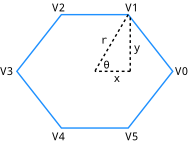
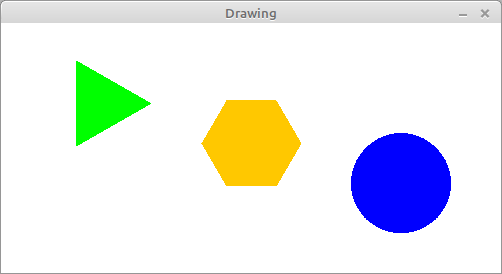

19 Advanced Topics
When we first looked at inheritance in Chapter 14, our purpose was to avoid duplicating code. We noticed that “decks of cards” and “hands of cards” had common functionality, and we designed a CardCollection class to provide it. This technique is an example of generalization. By generalizing the code, we were able to reuse it in the Deck and Hand classes.
In Chapter 15, we looked at inheritance from a different point of view. When designing GridCanvas to represent a grid of cells, we extended Canvas and overrode its paint method. This design is an example of specialization. Using the code provided by Canvas, we created a specialized subclass with minimal additional code.
We didn’t write the code for Canvas; it’s part of the Java library. But we were able to customize it for our own purposes. In fact, the Canvas class was explicitly designed to be extended.
In this chapter, we’ll explore the concept of inheritance more fully and present event-driven programming. We’ll continue to develop graphical simulations as a running example, but this time in varying shapes and colors!
19.1 Polygon Objects
The word polygon means “many angles”; the most basic polygons are triangles (three angles), rectangles (four angles), pentagons (five angles), and so forth. Polygons are an important part of computer graphics because they are used to compose more complex images.
Java provides a Polygon class (in java.awt) that we can use to represent and draw polygons. The following code creates an empty Polygon and adds three points, forming a triangle:
Polygon p = new Polygon();
p.addPoint(57, 110);
p.addPoint(100, 35);
p.addPoint(143, 110);Internally, Polygon objects have three attributes:
public int npoints;// total number of pointspublic int[] xpoints;// array of X coordinatespublic int[] ypoints;// array of Y coordinates
When a Polygon is created, npoints is 0 and the two arrays are initialized with length 4. As points are added, npoints is incremented. If npoints exceeds the length of the arrays, larger arrays are created, and the previous values are copied over (similar to how ArrayList works).
The Polygon class provides many useful methods, like contains, intersects, and translate. We’ll get to those later, but first we’re going to do some specialization.
19.2 Adding Color
Specialization is useful for adding new features to an existing class, especially when you can’t (or don’t want to) change its design. For example, we can extend the Polygon class by adding a draw method and a Color attribute:
public class DrawablePolygon extends Polygon {
protected Color color;
public DrawablePolygon() {
super();
color = Color.GRAY;
}
public void draw(Graphics g) {
g.setColor(color);
g.fillPolygon(this);
}
}As a reminder, constructors are not inherited when you extend a class. If you don’t define a constructor, the compiler will generate one that does nothing.
The constructor for DrawablePolygon uses super to invoke the constructor for Polygon, which initializes the attributes npoints, xpoints, and ypoints. Then DrawablePolygon initializes the color attribute to GRAY.
DrawablePolygon has the same attributes and methods that Polygon has, so you can use addPoint as before, or you can directly access npoints, xpoints, and ypoints (since they are public). You can also use methods like contains, intersects, and translate.
The following code creates a DrawablePolygon with the same points as in the previous section and sets its color to GREEN:
DrawablePolygon p = new DrawablePolygon();
p.addPoint(57, 110);
p.addPoint(100, 35);
p.addPoint(143, 110);
p.color = Color.GREEN;19.3 Regular Polygons
In mathematics, a regular polygon has all sides the same length and all angles equal in measure. Regular polygons are a special case of polygons, so we will use specialization to define a class for them.
We could extend the Polygon class, as we did in the previous section. But then we would not have the Color functionality we just added. So we will make RegularPolygon extend DrawablePolygon.
To construct a RegularPolygon, we specify the number of sides, the radius (distance from the center to a vertex), and the color. For example:
RegularPolygon rp = new RegularPolygon(6, 50, Color.BLUE);
The constructor uses trigonometry to find the coordinates of each vertex. Figure 17.1 illustrates the process. The number of sides (\(n=6\)) and the radius (\(r=50\)) are given as parameters.
Imagine a clock hand starting at V0 and rotating counterclockwise to V1, V2, and so forth. In Figure 17.1, the hand is currently at V1.
The angle \(\theta\) is \(2 \pi / n\), since there are \(2\pi\) radians in a circle. In other words, we are dividing the rotation of the clock hand into \(n\) equal angles.
By definition, \(\cos(\theta) = x/r\) and \(\sin(\theta) = y/r\). Therefore, \(x = r \cos(\theta)\) and \(y = r \sin(\theta)\).
We can determine the other \((x, y)\) coordinates by multiplying \(\theta\) by \(i\), where \(i\) is the vertex number.
Here is the constructor for RegularPolygon:
public RegularPolygon(int nsides, int radius, Color color) {
// initialize DrawablePolygon attributes
this.npoints = nsides;
this.xpoints = new int[nsides];
this.ypoints = new int[nsides];
this.color = color;
// the amount to rotate for each vertex (in radians)
double theta = 2.0 * Math.PI / nsides;
// compute x and y coordinates, centered at the origin
for (int i = 0; i < nsides; i++) {
double x = radius * Math.cos(i * theta);
double y = radius * Math.sin(i * theta);
xpoints[i] = (int) Math.round(x);
ypoints[i] = (int) Math.round(y);
}
}This constructor initializes all four DrawablePolygon attributes, so it doesn’t have to invoke super().
It initializes xpoints and ypoints by creating arrays of integer coordinates. Inside the for loop, it uses Math.sin and Math.cos (see Section 4.6) to compute the coordinates of the vertices as floating-point numbers. Then it rounds them off to integers and stores them in the arrays.
When we construct a RegularPolygon, the vertices are centered at the point \((0, 0)\). If we want the center of the polygon to be somewhere else, we can use translate, which we inherit from Polygon:
RegularPolygon rp = new RegularPolygon(6, 50, Color.BLUE);
rp.translate(100, 100);The result is a six-sided polygon with radius 50 centered at the point \((100, 100)\).
19.4 More Constructors
Classes in the Java library often have more than one constructor for convenience. We can do the same with RegularPolygon. For example, we can make the color parameter optional by defining a second constructor:
public RegularPolygon(int nsides, int radius) {
this(nsides, radius, Color.GRAY);
}The keyword this, when used in a constructor, invokes another constructor in the same class. It has a similar syntax as the keyword super, which invokes a constructor in the superclass.
Similarly, we could make the radius parameter optional too:
public RegularPolygon(int nsides) {
this(nsides, 50);
}Now, suppose we invoke the RegularPolygon constructor like this:
RegularPolygon rp = new RegularPolygon(6);Because we provide only one integer argument, Java calls the third constructor, which calls the second one, which calls the first one. The result is a RegularPolygon with the specified value of nsides, 6, the default value of radius, 50, and the default color, GRAY.
When writing constructors, it’s a good idea to validate the values you get as arguments. Doing so prevents run-time errors later in the program, which makes the code easier to debug.
For RegularPolygon, the number of sides should be at least three, the radius should be greater than zero, and the color should not be null. We can add the following lines to the first constructor:
public RegularPolygon(int nsides, int radius, Color color) {
// validate the arguments
if (nsides < 3) {
throw new IllegalArgumentException("invalid nsides");
}
if (radius <= 0) {
throw new IllegalArgumentException("invalid radius");
}
if (color == null) {
throw new NullPointerException("invalid color");
}
// the rest of the method is omittedIn this example, we throw an exception to indicate that one of the arguments is invalid. By default, these exceptions terminate the program and display an error message along with the stack trace.
Because we added this code to the most general constructor, we don’t have to add it to the others.
19.5 An Initial Drawing
Now that we have DrawablePolygon and RegularPolygon, let’s take them for a test drive. We’ll need a Canvas for drawing them, so we define a new class, Drawing, that extends Canvas:
public class Drawing extends Canvas {
private ArrayList<DrawablePolygon> list;
public Drawing(int width, int height) {
setSize(width, height);
setBackground(Color.WHITE);
list = new ArrayList<DrawablePolygon>();
}public void add(DrawablePolygon dp) {
list.add(dp);
}
public void paint(Graphics g) {
for (DrawablePolygon dp : list) {
dp.draw(g);
}
}
}The Drawing class has an ArrayList of DrawablePolygon objects. When we create a Drawing object, the list is initially empty. The add method takes a DrawablePolygon and adds it to the list.
Drawing overrides the paint method that it inherits from Canvas. paint loops through the list of DrawablePolygon objects and invokes draw on each one.
Here is an example that creates three RegularPolygon objects and draws them. Figure 17.2 shows the result.
public static void main(String[] args) {
// create some regular polygons
DrawablePolygon p1 = new RegularPolygon(3, 50, Color.GREEN);
DrawablePolygon p2 = new RegularPolygon(6, 50, Color.ORANGE);
DrawablePolygon p3 = new RegularPolygon(360, 50, Color.BLUE);
// move them out of the corner
p1.translate(100, 80);
p2.translate(250, 120);
p3.translate(400, 160);
// create drawing, add polygons
Drawing drawing = new Drawing(500, 250);
drawing.add(p1);
drawing.add(p2);
drawing.add(p3);// set up the window frame
JFrame frame = new JFrame("Drawing");
frame.setDefaultCloseOperation(JFrame.EXIT_ON_CLOSE);
frame.add(drawing);
frame.pack();
frame.setVisible(true);
}
RegularPolygon objects.
The first block of code creates RegularPolygon objects with 3, 6, and 360 sides. As you can see, a polygon with 360 sides is a pretty good approximation of a circle.
The second block of code translates the polygons to different locations. The third block of code creates the Drawing and adds the polygons to it. And the fourth block of code creates a JFrame, adds the Drawing to it, and displays the result.
Most of these pieces should be familiar, but one part of this program might surprise you. When we create the RegularPolygon objects, we assign them to DrawablePolygon variables. It might not be obvious why that’s legal.
RegularPolygon extends DrawablePolygon, so every RegularPolygon object is also a DrawablePolygon. The parameter of Drawing.add has to be a DrawablePolygon, but it can be any type of DrawablePolygon, including RegularPolygon and other subclasses.
This design is an example of polymorphism, a fancy word that means “having many forms”. Drawing.add is a polymorphic method, because the parameter can be one of many types. And the ArrayList in Drawing is a polymorphic data structure, because the elements can be different types.
19.6 Blinking Polygons
At this point, we have a simple program that draws polygons; we can make it more fun by adding animation. Chapter 15 introduced the idea of simulating time steps. Here’s a loop that runs the animation:
while (true) {
drawing.step();
try {
Thread.sleep(1000 / 30);
} catch (InterruptedException e) {
// do nothing
}
}Each time through the loop, we call step to update the Drawing. Then we sleep with a delay calculated to update about 30 times per second.
Here’s what the step method of Drawing looks like:
public void step() {
for (DrawablePolygon dp : list) {
dp.step();
}
repaint();
}It invokes step on each DrawablePolygon in the list and then repaints (clears and redraws) the canvas.
In order for this code to compile, we need DrawablePolygon to provide a step method. Here’s a version that doesn’t do anything; we’ll override it in subclasses:
public void step() {
// do nothing
}Now let’s design a new type of polygon that blinks. We’ll define a class named BlinkingPolygon that extends RegularPolygon and adds two more attributes: visible, which indicates whether the polygon is visible, and count, which counts the number of time steps since the last blink:
public class BlinkingPolygon extends RegularPolygon {
protected boolean visible;
protected int count;
public BlinkingPolygon(int nsides, int radius, Color c) {
super(nsides, radius, c);
visible = true;
count = 0;
}
public void draw(Graphics g) {
if (visible) {
super.draw(g);
}
}
public void step() {
count++;
if (count == 10) {
visible = !visible;
count = 0;
}
}
}The constructor uses super to call the RegularPolygon constructor. Then it initializes visible and count. Initially, the BlinkingPolygon is visible.
The draw method draws the polygon only if it is visible. It uses super to call draw in the parent class. But the parent class is RegularPolygon, which does not provide a draw method. In this case, super invokes draw from the DrawablePolygon class.
The step method increments count. Every 10 time steps, it toggles visible and resets count to 0.
19.7 Interfaces
You might be getting tired of polygons at this point. Can’t we draw anything else? Of course we can, but Drawing is currently based on DrawablePolygon. To draw other types of objects, we have to generalize the code.
The Drawing class does essentially three things: (1) it maintains a list of objects, (2) it invokes the draw method on each object, and (3) it invokes the step method on each object.
So here’s one way we could make the code more general:
Define a new superclass, which we call
Actor, that provides the two methods needed byDrawing:public class Actor { public void draw(Graphics g) { // do nothing } public void step() { // do nothing } }In the
Drawingclass, replaceDrawablePolygonwithActor.Any class that we want to draw must now extend
Actor.
There’s just one problem: DrawablePolygon already extends Polygon, and classes can extend only one superclass. Also, the Actor class seems pointless, since the methods it defines don’t do anything.
Java provides another mechanism for inheritance that solves these problems. We can define Actor as an interface instead of a class, like this:
public interface Actor {
void draw(Graphics g);
void step();
}Like a class definition, an interface definition contains methods. But it contains only the declarations of the methods, not their implementations.
Like an abstract class, an interface specifies methods that must be provided by subclasses. The difference is that an abstract class can implement some methods; an interface cannot.
All interface methods are public by default, since they are intended to be used by other classes. So there is no need to declare them as public.
To inherit from an interface, you use the keyword implements instead of extends. Here’s a version of DrawablePolygon that extends Polygon and implements Actor. So it inherits methods from Polygon, and it is required to provide the methods in Actor; namely draw and step:
public class DrawablePolygon extends Polygon implements Actor {
// rest of the class omitted
}In terms of inheritance, DrawablePolygon is both a Polygon and an Actor. So the following assignments are legal:
Polygon p1 = new DrawablePolygon();
Actor a2 = new DrawablePolygon();And the same is true for subclasses of DrawablePolygon; these assignments are legal too:
Polygon p2 = new RegularPolygon(5, 50, Color.YELLOW);
Actor a2 = new RegularPolygon(5, 50, Color.YELLOW);Interfaces are another example of polymorphism. a1 and a2 are the same type of variable, but they refer to objects with different types. And similarly with p1 and p2.
Classes may extend only one superclass, but they may implement as many interfaces as needed. Java library classes often implement multiple interfaces.
19.8 Event Listeners
Now that our Drawing is based on Actor instead of DrawablePolygon, we can draw other types of graphics. Here is the beginning of a class that reads an image from a file and shows the image moving across the canvas. The class is called Sprite because a moving image is sometimes called a sprite, in the context of computer graphics:
public class Sprite implements Actor, KeyListener {
private int xpos;
private int ypos;
private int dx;
private int dy;
private Image image;
public Sprite(String path, int xpos, int ypos) {
this.xpos = xpos;
this.ypos = ypos;
try {
this.image = ImageIO.read(new File(path));
} catch (IOException exc) {
exc.printStackTrace();
}
}
}The instance variables xpos and ypos represent the location of the sprite. dx and dy represent the velocity of the sprite in the \(x\) and \(y\) directions.
The constructor takes as parameters the name of a file and the initial position. It uses ImageIO, from the javax.imageio package, to read the file. If an error occurs during reading, an IOException is caught, and the program displays the stack trace for debugging.
Sprite implements two interfaces: Actor and KeyListener. Actor requires that we provide draw and step methods:
public void draw(Graphics g) {
g.drawImage(image, xpos, ypos, null);
}
public void step() {
xpos += dx;
ypos += dy;
}The draw method draws the image at the sprite’s current position. The step method changes the position based on dx and dy, which are initially zero.
KeyListener is an interface for receiving keyboard events, which means we can detect and respond to key presses. A class that implements KeyListener has to provide the following methods:
void keyPressed(KeyEvent e)
Invoked when a key has been “pressed”. This method is invoked repeatedly while a key is being held down.
void keyReleased(KeyEvent e)
Invoked when a key has been “released”, meaning it is no longer down.
void keyTyped(KeyEvent e)
Invoked when a key has been “typed”, which generally means it has been both pressed and released.
These methods get invoked when the user presses and releases any key. They take a KeyEvent object as a parameter, which specifies which key was pressed, released, or typed.
We can use these methods to design a simple animation using the arrow keys. When the user presses up or down, the sprite will move up or down. When the user presses left or right, the sprite will move left or right.
Here’s an implementation of keyPressed that uses a switch statement to test which arrow key was pressed and sets dx or dy accordingly. (There is no default branch, so we ignore all other keys.)
public void keyPressed(KeyEvent e) {
switch (e.getKeyCode()) {
case KeyEvent.VK_UP:
dy = -5;
break;
case KeyEvent.VK_DOWN:
dy = +5;
break;
case KeyEvent.VK_LEFT:
dx = -5;
break;
case KeyEvent.VK_RIGHT:
dx = +5;
break;
}
}The values of dx and dy determine how much the sprite moves each time step is invoked. While the user holds down an arrow key, the sprite will move at a constant speed.
Here’s an implementation of keyReleased that runs when the user releases the key:
public void keyReleased(KeyEvent e) {
switch (e.getKeyCode()) {
case KeyEvent.VK_UP:
case KeyEvent.VK_DOWN:
dy = 0;
break;
case KeyEvent.VK_LEFT:
case KeyEvent.VK_RIGHT:
dx = 0;
break;
}
}When the user releases the key, keyReleased sets dx or dy to 0, so the sprite stops moving in that direction.
We don’t need the keyTyped method for this example, but it’s required by the interface; if we don’t provide one, the compiler will complain. So we provide an implementation that does nothing:
public void keyTyped(KeyEvent e) {
// do nothing
}Now, here’s the code we need to create a Sprite, add it to a Drawing, and configure it as a KeyListener:
Sprite sprite = new Sprite("face-smile.png", 25, 150);
drawing.add(sprite);
drawing.addKeyListener(sprite);
drawing.setFocusable(true);Recall that the add method is one that we wrote in Section 17.5. It adds an Actor to the list of objects to be drawn.
The addKeyListener method is inherited from Canvas. It adds a KeyListener to the list of objects that will receive key events.
In graphical applications, key events are sent to components only when they have the keyboard focus. The setFocusable method ensures that drawing will have the focus initially, without the user having to click it first.
19.9 Timers
Now that you know about interfaces and events, we can show you a better way to create animations. Previously, we implemented the animation loop by using while (true) and Thread.sleep. Java provides a Timer class (in javax.swing) that encapsulates this behavior.
A Timer is useful for executing code at regular intervals. The constructor for Timer takes two parameters:
int delay// milliseconds between eventsActionListener listener// for handling timer events
The ActionListener interface requires only one method, actionPerformed. This is the method the Timer invokes after the given delay.
Using a Timer, we can reorganize the code in main by defining a class that implements ActionListener:
public class VideoGame implements ActionListener {
private Drawing drawing;
public VideoGame() {
Sprite sprite = new Sprite("face-smile.png", 50, 50);
drawing = new Drawing(800, 600);
drawing.add(sprite);
drawing.addKeyListener(sprite);
drawing.setFocusable(true);
JFrame frame = new JFrame("Video Game");
frame.setDefaultCloseOperation(JFrame.EXIT_ON_CLOSE);
frame.add(drawing);
frame.pack();
frame.setVisible(true);
}
public void actionPerformed(ActionEvent e) {
drawing.step();
}
public static void main(String[] args) {
VideoGame game = new VideoGame();
Timer timer = new Timer(33, game);
timer.start();
}
}The main method constructs a VideoGame object, which creates a Sprite, a Drawing, and a JFrame. Then it constructs a Timer object and starts the timer. Every 33 milliseconds, the Timer invokes actionPerformed, which invokes step on the Drawing.
Drawing.step invokes step on all of its Actor objects, which causes them to update their position, color, or other aspects of their appearance. The Drawing.step then repaints the Canvas, and the time step is done.
At this point, you have all of the elements you need to write your own video games. In the exercises at the end of this chapter, we have some suggestions for getting started.
We hope this final chapter has been a helpful summary of topics presented throughout the book, including input and output, decisions and loops, classes and methods, arrays and objects, inheritance, and graphics. Congratulations on making it to the end!
19.10 Vocabulary
- generalization:
-
The process of extracting common code from two or more classes and moving it into a superclass.
- specialization:
-
Extending a class to add new attributes or methods, or to modify existing behavior.
- polymorphism:
-
A language feature that allows objects to be assigned to variables of related types.
- sprite:
-
A computer graphic that may be moved or otherwise manipulated on the screen.
19.11 Exercises
The code for this chapter is in the ch17 directory of ThinkJavaCode2. See page for instructions on how to download the repository. Before you start the exercises, we recommend that you compile and run the examples.
The following exercises give you a chance to practice using the features in this chapter by extending the example code.
Exercise 17.1. The Polygon class does not provide a toString method; it inherits the default toString from java.lang.Object, which includes only the class’s name and memory location. Write a more useful toString method for DrawablePolygon that includes its \((x, y)\) points.
Exercise 17.2. Write a class MovingPolygon that extends RegularPolygon and implements Actor. It should have instance variables posx and posy that specify its position, and dx and dy that specify its velocity (and direction). During each time step, it should update its position. If it gets to the edge of the Drawing, it should reverse direction by changing the sign of dx or dy.
Exercise 17.3. Modify the VideoGame class so it displays a Sprite and a MovingPolygon (from the previous exercise). Add code that detects collisions between Actor objects in the same Drawing, and invoke a method on both objects when they collide.
**Hint:* You might want to add a method to the Actor interface, guaranteeing that all Actor objects know how to handle collisions.*
Exercise 17.4. Java provides other event listeners that you can implement to make your programs interactive. For example, the interfaces MouseListener, MouseMotionListener, and MouseWheelListener allow you to respond to mouse input. Use the MouseListener interface to implement an Actor that can respond to mouse clicks.